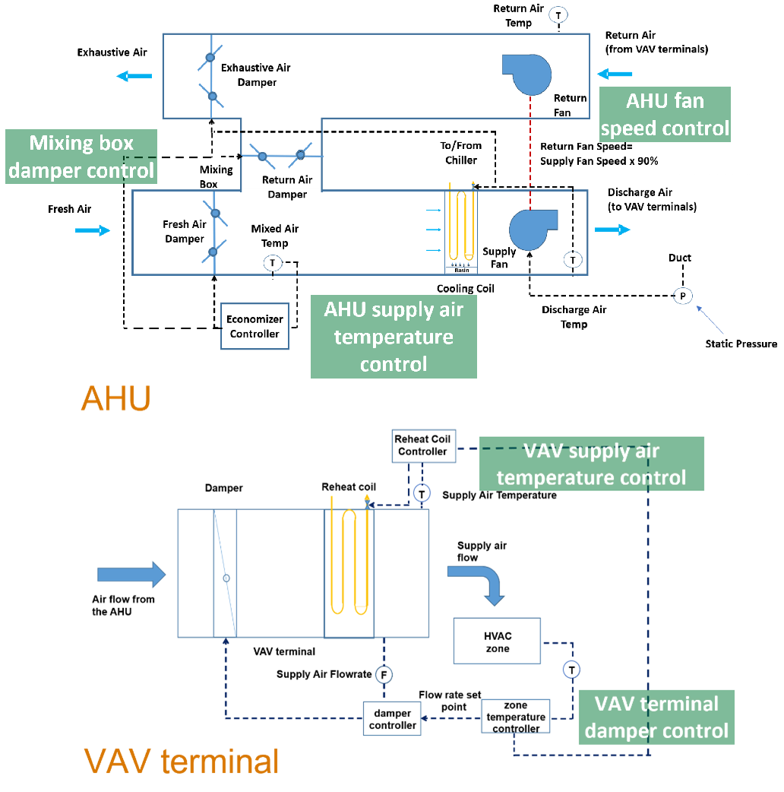

The multi zone office complex air emulator model emulating a large office building with multi-zone VAV systems, chilled water systems, and hot water systems. In the emulator, the Spawn-of-EnergyPlus (Spawn) supports the cosimulation of EnergyPlus and Modelica. EnergyPlus (V9.6) calculates the building’s thermal loads with the boundary conditions. Modelica is responsible for the airflow calculation (e.g., building infiltration) and HVAC system and controls. Spawn integrated model is compiled into Functional Mockup Unit (FMU) using Optimica (V1.40).
The layout is representative of the large commercial office building stock and is consistent with the building prototypes. The test case is located in Chicago, IL and based on the DOE Reference Large Office Building Model (Constructed In or After 1980). The geometry of the building is shown in the Figure below. The original model has 12 floors with a basement. For simplicity, the middle 10 floors are treated as identical. The ground floor is assumed to be adiabatic with the basement.
The represented floor has five zones, with four perimeter zones and one core zone. Each perimeter zone has a window-to-wall ratio of about 0.38. The height of each zone is 2.74 m and the areas are as follows:
The geometry of the floor is shown as the following figure:
Opaque constructions: Mass walls; built-up flat roof (insulation above deck); slab-on-grade floor.
Windows: Window-to-wall ratio = 38.0%, equal distribution of windows.
Infiltration: No infiltration.
The design occupancy density is 0.05 people/m2. The number of occupants present in each zone at any time coincides with the internal gain schedule. The occupied time for the HVAC system is between 9:00 and 17:00 each day. The unoccupied time is outside of this period.
The design internal gains include lighting, plug loads, and people. The lighting load is with a radiant-convective-visible split of 70%-10%-20%. The plug load is with a radiant-convective-latent split of 50%-50%-0%. The people load is with a radiant-convective split of 30%-70%. The occupancy and the internal gains are activated according to the schedule in the figure below.
The power densities of the internal gains are listed in the following table.
| Internal Gains | Power Density [W/m2] |
|---|---|
| Lighting | 16.14 |
| Plug | 10.76 |
| People | xxx |
The weather data is from TMY3 for Chicago O'Hare International Airport.
The HVAC system of the test case can be categorized into the air-side systems (i.e., variable air volume (VAV) systems) and water-side systems (i.e., a chilled water systems and a hot water system).
The air-side systems are VAV systems with terminal reheat. Each floor is served by a dedicated AHU and each zone of the test case is served by a dedicated VAV box. The following figure depicts how the VAVs, AHU, and zones are connected on each floor in general. There are two fans (i.e., one supply fan, and one return fan) in the AHU system. A mixing box carries out the economizer function of providing cooling and ventilation. It is noted that no pre-heating coil is installed in the AHU and the heating is provided by the reheat coils in the VAV terminals.
The water-side systems of the test case include one chilled water system and one hot water system. The chilled water systems composed of three chillers, three cooling towers, a primary chilled water loop with three constant speed pumps, a secondary chilled water loop with two variable speed pumps, and a condenser water loop with three constant speed pumps . The hot water system consists of two gas boilers and two variable speed pumps. The figure below shows the schematics of the chilled water and hot water systems.
The HVAC sizing in Modelica is determined by the annual simulation results of EnergyPlus. The pressure loop related sizing parameters are estimated using a common HVAC design procedure. The following tables list all the sizing parameters in detail.
| VAV terminal with Reheat Coil | Design Air Flow Rate [m3/s] | Minimum Damper Position | Design Reheat Coil Water Flow Rate [m3/s] | Design Reheat Coil Capacity [W] | Design Reheat Coil U-Factor Times Area Value [W/K] |
|---|---|---|---|---|---|
| Bot Floor Core Zone VAV | 10.58 | 0.3 | 0.000847 | 38707 | 739.84 |
| Mid Floor Core Zone VAV | 111.04 | 0.3 | 0.009274 | 423571.79 | 8147.27 |
| Top Floor Core Zone VAV | 10.26 | 0.3 | 0.003319 | 151587.7 | 3712.01 |
| Bot Floor South Zone VAV | 2.21 | 0.3 | 0.000873 | 39859.31 | 975.85 |
| Bot Floor East Zone VAV | 2.03 | 0.3 | 0.000582 | 26573.59 | 650.58 |
| Bot Floor North Zone VAV | 1.55 | 0.3 | 0.000873 | 39858.23 | 975.82 |
| Bot Floor West Zone VAV | 2.13 | 0.3 | 0.000581 | 26544.93 | 649.88 |
| Mid Floor South Zone VAV | 22.51 | 0.3 | 0.009457 | 431922.88 | 10574.57 |
| Mid Floor East Zone VAV | 20.96 | 0.3 | 0.006232 | 284630.34 | 6968.46 |
| Mid Floor North Zone VAV | 15.74 | 0.3 | 0.009457 | 431921.97 | 10574.55 |
| Mid Floor West Zone VAV | 22.22 | 0.3 | 0.006297 | 287581 | 7040.71 |
| Top Floor South Zone VAV | 2.2 | 0.3 | 0.001301 | 59434.84 | 1455.18 |
| Top Floor East Zone VAV | 2.01 | 0.3 | 0.00085 | 38840.84 | 950.96 |
| Top Floor North Zone VAV | 1.6 | 0.3 | 0.001301 | 59434.42 | 1455.17 |
| Top Floor West Zone VAV | 2.23 | 0.3 | 0.000859 | 39244.52 | 960.85 |
| AHU Cooling Coils | Design Inlet Water Temperature [C] | Design Outlet Air Temperature [C] | Design Coil Capacity [W] | Design Water Flow Rate [m3/s] | Design Air Flow Rate [m3/s] |
|---|---|---|---|---|---|
| Bot Floor Cooling Coil | 6.67 | 11.4 | 360883.2 | 0.01289 | 18.51 |
| Mid Floor Cooling Coil | 6.67 | 11.43 | 3717218.05 | 0.13277 | 192.47 |
| Top Floor Cooling Coil | 6.67 | 11.4 | 361370.67 | 0.012907 | 18.3 |
| Fans | Type | Design Size Supply Fan Flow Rate [m3/s] | Design Size Supply Fan Pressure Head [Pa] | Total Efficiency | Design Power Consumption [W] |
|---|---|---|---|---|---|
| Bot Floor Supply Fan | Variable speed | 18.51 | |||
| Mid Floor Supply Fan | Variable speed | 192.47 | |||
| Top Floor Supply Fan | Variable speed | 18.3 | |||
| Bot Floor Return Fan | Variable speed | ||||
| Mid Floor Return Fan | Variable speed | ||||
| Top Floor Return Fan | Variable speed |
| Pumps | Type | Design Flow Rate [m3/s] | Design Size Supply Fan Pressure Head [Pa] | Total Efficiency | Design Power Consumption [W] |
|---|---|---|---|---|---|
| CHW Primary Pumps 1 | Constant speed | 0.131934 | 33707.32 | ||
| CHW Primary Pumps 2 | Constant speed | 0.077086 | 20257.15 | ||
| CHW Primary Pumps 3 | Constant speed | 0.000269 | 72.71 | ||
| CHW Secondary Pumps 1 | Variable speed | 0.186704 | 49345.24 | ||
| CHW Secondary Pumps 2 | Variable speed | 0.186704 | 49345.24 | ||
| CW Pump 1 | Variable speed | ||||
| CW Pump 2 | Variable speed | ||||
| HW Pump 1 | Variable speed | ||||
| HW Pump 2 | Variable speed |
| Chillers | Design Chilled Water Flow Rate [m3/s] | Design Capacity [W] | Design Condenser Water Flow Rate [m3/s] |
|---|---|---|---|
| Chiller 1 | 0.065967 | 1848765.65 | 0.093352 |
| Chiller 2 | 0.065967 | 1848765.65 | 0.093352 |
| Chiller 3 | 0.065967 | 1848765.65 | 0.093352 |
| Boilers | Design Size Nominal Capacity [W] | Design Size Design Water Flow Rate [m3/s] |
|---|---|---|
| Boiler 1 | 3520749.8 | 0.077086 |
| Boiler 2 | 3520749.8 | 0.077086 |
| Cooling Towers | Design Water Flow Rate [m3/s] | Fan Power at Design Air Flow Rate [W] | Design Air Flow Rate [m3/s] | U-Factor Times Area Value at Design Air Flow Rate [W/C] |
|---|---|---|---|---|
| Cooling Tower 1 | 0.186704 | 45882.78 | 123.66 | 264028.98 |
| Cooling Tower 2 | 0.186704 | 45882.78 | 123.66 | 264028.98 |
| Ventilation | Maximum Outdoor Air Flow Rate [m3/s] | Minimum Outdoor Air Flow Rate [m3/s] |
|---|---|---|
| Bot Floor Outdoor Air | 18.51 | 2.4 |
| Mid Floor Outdoor Air | 192.47 | 23.97 |
| Top Floor Outdoor Air | 18.3 | 2.4 |

Controller for terminal VAV box with hot water reheat and damper. It is based on the "single maximum VAV reheat control logic".
When the Zone State is cooling, the cooling-loop output shall be mapped to the active airflow setpoint from the cooling minimum endpoint to the cooling maximum endpoint. Heating coil is disabled.
When the Zone State is deadband, the active airflow setpoint shall be the minimum endpoint. Heating coil is disabled.
When the Zone State is heating, the active airflow setpoint shall be the minimum endpoint. The reheat valve position shall be mapped to the supply air temperature setpoint from the heating minimum endpoint to the heating maximum endpoint.

Taylor, Steven T., et al. "Dual maximum VAV box control logic." ASHRAE Journal, vol. 54, no. 12, Dec. 2012.
VAV air flow rate control
VAV damper position is controlled by a PI controller to maintain the air flow rate at setpoint. It takes the zone air flow rate measurements and setpoints as inputs. It takes the VAV damper position as the output.
VAV supply air temperature Control
Heating coil valve position is controlled by a PI controller to maintain the supply air temperature at setpoint. It takes the zone air temperature measurements and setpoint as inputs. It takes the heating coil valve position as the output.
AHU duct static pressure control
Supply fan speed is controlled by a PI controller to maintain duct static pressure (DSP) at setpoint when the fan is proven ON. It takes the static pressure measurements and setpoints as inputs. It takes the supply fan speed as the output. The AHU return fan speed is set as a constant ratio (0.9) of the supply fan speed .
AHU supply air temperature control
Cooling coil valve position is controlled by a PI controller to maintain the AHU supply air temperature at setpoint. It takes the supply air temperature measurements and setpoints as inputs. It takes the cooling coil valve position as the output.
Mixing box damper and economizer control
In the mixing box of the AHU, an economizer is implemented to use the outdoor air to meet the cooling load when outdoor conditions are favorable.
Outdoor air damper position is controlled by a PI controller to maintain the mixed air temperature at setpoint. It takes the mixed and outdoor air temperature measurements, as well as the mixed air temperature setpoints as inputs. It takes the outdoor air damper position as the output. The return air damper are interlocked with the outdoor air damper while exhausted air damper share the same opening position with the outdoor air damper.
On top of that, an economizer control based on the fixed dry-bulb outdoor air temperature-based is adopted. The economizer higher temperature limit is set as 21 ℃ according to ASHRAE 90.1-2019 for Climate Zone 5A.

Chiller plant staging control
The number of operating chillers is determined via a state machine based on the thermal load (Q, kW), rated chiller cooling capacity of chiller k (cck, kW), threshold to start chiller k+1 (ξk = 0.9), and waiting time (30 min). The maximum operating chiller number is N, which is equal to 3.
The stage control logic is shown as the following figure.

Chilled water supply temperature control
The model takes as an input the set point for the leaving chilled water temperature, which is met if the chiller has sufficient capacity. Thus, the model has a built-in, ideal temperature control.
Secondary chilled water pump staging control
The number of secondary chilled water pump is determined via a state machine based on the pump speed (S, rpm) and waiting time (30 min). The maximum operating pump number is M, which is equal to 2.
The stage control logic is shown as the following figure.

Secondary chilled water loop static pressure control
Secondary chilled water pump speed is controlled by a PI controller to maintain the static pressure of the secondary chilled water loop at setpoint. It takes the chilled water loop static pressure measurements and setpoints as inputs. It takes the pump speed as the output. The operating secondary chilled water pumps share the same speed.
Cooling Tower supply water temperature control
Cooling tower fan speed is controlled by a PI controller to maintain the cooling tower supply water temperature at setpoint. It takes the cooling tower supply water temperature measurements and setpoints as inputs. It takes the cooling tower fan speed as the output. All the operating cooling towers share the same fan speed.
Minimum condenser supply water temperature control
Three-way valve position is controlled by a PI controller to maintain the temperature of the condenser water leaving the condenser water loop to be larger than 15.56 ℃. It takes the condenser supply water temperature measurements and setpoints as inputs. It takes the three-way valve position as the output.
Boiler staging control
The number of operating boilers is determined via a state machine based on the thermal load(Q, kW), rated heating capacity of boiler k (hck, kW), threshold to start boiler k+1 (ξk = 0.9), and waiting time (30 min). The maximum operating boiler number is N, which is equal to 2.
The stage control logic is shown as the following figure.

Boiler water temperature control
Boiler heating power is controlled by a PI controller to maintain the temperature of the hot water leaving each boiler to be 80 ℃. It takes the hot water measurements and set points as inputs. It takes the heating power as the output.
Boiler hot water loop static pressure control
Boiler pump speed is controlled by a PI controller to maintain the static pressure of the boiler water loop at setpoint. It takes the heat water loop pressure drop measurements and setpoints as inputs. It takes the pump speed as the output. All the boiler pumps share the same speed.
The model inputs are:
hvac_floor1_TSupAirSet_u [K] [min=285.15, max=313.15]: Supply air temperature setpoint for AHU
hvac_floor1_dpSet_u [Pa] [min=50.0, max=410.0]: Supply duct pressure setpoint for AHU
hvac_floor1_duaFanAirHanUnit_cooCoil_yCoo_u [1] [min=0.0, max=1.0]: Cooling coil valve control signal for AHU
hvac_floor1_duaFanAirHanUnit_mixingBox_mixBox_yEA_u [1] [min=0.0, max=1.0]: Exhaust air damper position setpoint for AHU
hvac_floor1_duaFanAirHanUnit_mixingBox_mixBox_yOA_u [1] [min=0.0, max=1.0]: Outside air damper position setpoint for AHU
hvac_floor1_duaFanAirHanUnit_mixingBox_mixBox_yRet_u [1] [min=0.0, max=1.0]: Return air damper position setpoint for AHU
hvac_floor1_duaFanAirHanUnit_oveSpeRetFan_u [1] [min=0.0, max=1.0]: AHU return fan speed control signal
hvac_floor1_duaFanAirHanUnit_supFan_oveSpeSupFan_u [1] [min=0.0, max=1.0]: AHU supply fan speed control signal
hvac_floor1_fivZonVAV_vAV1_oveZonLoc_yDam_u [1] [min=0.0, max=1.0]: Damper position setpoint for zone cor
hvac_floor1_fivZonVAV_vAV1_oveZonLoc_yReaHea_u [1] [min=0.0, max=1.0]: Reheat control signal for zone cor
hvac_floor1_fivZonVAV_vAV2_oveZonLoc_yDam_u [1] [min=0.0, max=1.0]: Damper position setpoint for zone sou
hvac_floor1_fivZonVAV_vAV2_oveZonLoc_yReaHea_u [1] [min=0.0, max=1.0]: Reheat control signal for zone sou
hvac_floor1_fivZonVAV_vAV3_oveZonLoc_yDam_u [1] [min=0.0, max=1.0]: Damper position setpoint for zone eas
hvac_floor1_fivZonVAV_vAV3_oveZonLoc_yReaHea_u [1] [min=0.0, max=1.0]: Reheat control signal for zone eas
hvac_floor1_fivZonVAV_vAV4_oveZonLoc_yDam_u [1] [min=0.0, max=1.0]: Damper position setpoint for zone nor
hvac_floor1_fivZonVAV_vAV4_oveZonLoc_yReaHea_u [1] [min=0.0, max=1.0]: Reheat control signal for zone nor
hvac_floor1_fivZonVAV_vAV5_oveZonLoc_yDam_u [1] [min=0.0, max=1.0]: Damper position setpoint for zone wes
hvac_floor1_fivZonVAV_vAV5_oveZonLoc_yReaHea_u [1] [min=0.0, max=1.0]: Reheat control signal for zone wes
hvac_floor1_oveZonCor_TZonCooSet_u [K] [min=285.15, max=313.15]: Zone air temperature cooling setpoint for zone bot_floor_cor
hvac_floor1_oveZonCor_TZonHeaSet_u [K] [min=285.15, max=313.15]: Zone air temperature heating setpoint for zone bot_floor_cor
hvac_floor1_oveZonEas_TZonCooSet_u [K] [min=285.15, max=313.15]: Zone air temperature cooling setpoint for zone bot_floor_eas
hvac_floor1_oveZonEas_TZonHeaSet_u [K] [min=285.15, max=313.15]: Zone air temperature heating setpoint for zone bot_floor_eas
hvac_floor1_oveZonNor_TZonCooSet_u [K] [min=285.15, max=313.15]: Zone air temperature cooling setpoint for zone bot_floor_nor
hvac_floor1_oveZonNor_TZonHeaSet_u [K] [min=285.15, max=313.15]: Zone air temperature heating setpoint for zone bot_floor_nor
hvac_floor1_oveZonSou_TZonCooSet_u [K] [min=285.15, max=313.15]: Zone air temperature cooling setpoint for zone bot_floor_sou
hvac_floor1_oveZonSou_TZonHeaSet_u [K] [min=285.15, max=313.15]: Zone air temperature heating setpoint for zone bot_floor_sou
hvac_floor1_oveZonWes_TZonCooSet_u [K] [min=285.15, max=313.15]: Zone air temperature cooling setpoint for zone bot_floor_wes
hvac_floor1_oveZonWes_TZonHeaSet_u [K] [min=285.15, max=313.15]: Zone air temperature heating setpoint for zone bot_floor_wes
hvac_floor2_TSupAirSet_u [K] [min=285.15, max=313.15]: Supply air temperature setpoint for AHU
hvac_floor2_dpSet_u [Pa] [min=50.0, max=410.0]: Supply duct pressure setpoint for AHU
hvac_floor2_duaFanAirHanUnit_cooCoil_yCoo_u [1] [min=0.0, max=1.0]: Cooling coil valve control signal for AHU
hvac_floor2_duaFanAirHanUnit_mixingBox_mixBox_yEA_u [1] [min=0.0, max=1.0]: Exhaust air damper position setpoint for AHU
hvac_floor2_duaFanAirHanUnit_mixingBox_mixBox_yOA_u [1] [min=0.0, max=1.0]: Outside air damper position setpoint for AHU
hvac_floor2_duaFanAirHanUnit_mixingBox_mixBox_yRet_u [1] [min=0.0, max=1.0]: Return air damper position setpoint for AHU
hvac_floor2_duaFanAirHanUnit_oveSpeRetFan_u [1] [min=0.0, max=1.0]: AHU return fan speed control signal
hvac_floor2_duaFanAirHanUnit_supFan_oveSpeSupFan_u [1] [min=0.0, max=1.0]: AHU supply fan speed control signal
hvac_floor2_fivZonVAV_vAV1_oveZonLoc_yDam_u [1] [min=0.0, max=1.0]: Damper position setpoint for zone cor
hvac_floor2_fivZonVAV_vAV1_oveZonLoc_yReaHea_u [1] [min=0.0, max=1.0]: Reheat control signal for zone cor
hvac_floor2_fivZonVAV_vAV2_oveZonLoc_yDam_u [1] [min=0.0, max=1.0]: Damper position setpoint for zone sou
hvac_floor2_fivZonVAV_vAV2_oveZonLoc_yReaHea_u [1] [min=0.0, max=1.0]: Reheat control signal for zone sou
hvac_floor2_fivZonVAV_vAV3_oveZonLoc_yDam_u [1] [min=0.0, max=1.0]: Damper position setpoint for zone eas
hvac_floor2_fivZonVAV_vAV3_oveZonLoc_yReaHea_u [1] [min=0.0, max=1.0]: Reheat control signal for zone eas
hvac_floor2_fivZonVAV_vAV4_oveZonLoc_yDam_u [1] [min=0.0, max=1.0]: Damper position setpoint for zone nor
hvac_floor2_fivZonVAV_vAV4_oveZonLoc_yReaHea_u [1] [min=0.0, max=1.0]: Reheat control signal for zone nor
hvac_floor2_fivZonVAV_vAV5_oveZonLoc_yDam_u [1] [min=0.0, max=1.0]: Damper position setpoint for zone wes
hvac_floor2_fivZonVAV_vAV5_oveZonLoc_yReaHea_u [1] [min=0.0, max=1.0]: Reheat control signal for zone wes
hvac_floor2_oveZonCor_TZonCooSet_u [K] [min=285.15, max=313.15]: Zone air temperature cooling setpoint for zone mid_floor_cor
hvac_floor2_oveZonCor_TZonHeaSet_u [K] [min=285.15, max=313.15]: Zone air temperature heating setpoint for zone mid_floor_cor
hvac_floor2_oveZonEas_TZonCooSet_u [K] [min=285.15, max=313.15]: Zone air temperature cooling setpoint for zone mid_floor_eas
hvac_floor2_oveZonEas_TZonHeaSet_u [K] [min=285.15, max=313.15]: Zone air temperature heating setpoint for zone mid_floor_eas
hvac_floor2_oveZonNor_TZonCooSet_u [K] [min=285.15, max=313.15]: Zone air temperature cooling setpoint for zone mid_floor_nor
hvac_floor2_oveZonNor_TZonHeaSet_u [K] [min=285.15, max=313.15]: Zone air temperature heating setpoint for zone mid_floor_nor
hvac_floor2_oveZonSou_TZonCooSet_u [K] [min=285.15, max=313.15]: Zone air temperature cooling setpoint for zone mid_floor_sou
hvac_floor2_oveZonSou_TZonHeaSet_u [K] [min=285.15, max=313.15]: Zone air temperature heating setpoint for zone mid_floor_sou
hvac_floor2_oveZonWes_TZonCooSet_u [K] [min=285.15, max=313.15]: Zone air temperature cooling setpoint for zone mid_floor_wes
hvac_floor2_oveZonWes_TZonHeaSet_u [K] [min=285.15, max=313.15]: Zone air temperature heating setpoint for zone mid_floor_wes
hvac_floor3_TSupAirSet_u [K] [min=285.15, max=313.15]: Supply air temperature setpoint for AHU
hvac_floor3_dpSet_u [Pa] [min=50.0, max=410.0]: Supply duct pressure setpoint for AHU
hvac_floor3_duaFanAirHanUnit_cooCoil_yCoo_u [1] [min=0.0, max=1.0]: Cooling coil valve control signal for AHU
hvac_floor3_duaFanAirHanUnit_mixingBox_mixBox_yEA_u [1] [min=0.0, max=1.0]: Exhaust air damper position setpoint for AHU
hvac_floor3_duaFanAirHanUnit_mixingBox_mixBox_yOA_u [1] [min=0.0, max=1.0]: Outside air damper position setpoint for AHU
hvac_floor3_duaFanAirHanUnit_mixingBox_mixBox_yRet_u [1] [min=0.0, max=1.0]: Return air damper position setpoint for AHU
hvac_floor3_duaFanAirHanUnit_oveSpeRetFan_u [1] [min=0.0, max=1.0]: AHU return fan speed control signal
hvac_floor3_duaFanAirHanUnit_supFan_oveSpeSupFan_u [1] [min=0.0, max=1.0]: AHU supply fan speed control signal
hvac_floor3_fivZonVAV_vAV1_oveZonLoc_yDam_u [1] [min=0.0, max=1.0]: Damper position setpoint for zone cor
hvac_floor3_fivZonVAV_vAV1_oveZonLoc_yReaHea_u [1] [min=0.0, max=1.0]: Reheat control signal for zone cor
hvac_floor3_fivZonVAV_vAV2_oveZonLoc_yDam_u [1] [min=0.0, max=1.0]: Damper position setpoint for zone sou
hvac_floor3_fivZonVAV_vAV2_oveZonLoc_yReaHea_u [1] [min=0.0, max=1.0]: Reheat control signal for zone sou
hvac_floor3_fivZonVAV_vAV3_oveZonLoc_yDam_u [1] [min=0.0, max=1.0]: Damper position setpoint for zone eas
hvac_floor3_fivZonVAV_vAV3_oveZonLoc_yReaHea_u [1] [min=0.0, max=1.0]: Reheat control signal for zone eas
hvac_floor3_fivZonVAV_vAV4_oveZonLoc_yDam_u [1] [min=0.0, max=1.0]: Damper position setpoint for zone nor
hvac_floor3_fivZonVAV_vAV4_oveZonLoc_yReaHea_u [1] [min=0.0, max=1.0]: Reheat control signal for zone nor
hvac_floor3_fivZonVAV_vAV5_oveZonLoc_yDam_u [1] [min=0.0, max=1.0]: Damper position setpoint for zone wes
hvac_floor3_fivZonVAV_vAV5_oveZonLoc_yReaHea_u [1] [min=0.0, max=1.0]: Reheat control signal for zone wes
hvac_floor3_oveZonCor_TZonCooSet_u [K] [min=285.15, max=313.15]: Zone air temperature cooling setpoint for zone top_floor_cor
hvac_floor3_oveZonCor_TZonHeaSet_u [K] [min=285.15, max=313.15]: Zone air temperature heating setpoint for zone top_floor_cor
hvac_floor3_oveZonEas_TZonCooSet_u [K] [min=285.15, max=313.15]: Zone air temperature cooling setpoint for zone top_floor_eas
hvac_floor3_oveZonEas_TZonHeaSet_u [K] [min=285.15, max=313.15]: Zone air temperature heating setpoint for zone top_floor_eas
hvac_floor3_oveZonNor_TZonCooSet_u [K] [min=285.15, max=313.15]: Zone air temperature cooling setpoint for zone top_floor_nor
hvac_floor3_oveZonNor_TZonHeaSet_u [K] [min=285.15, max=313.15]: Zone air temperature heating setpoint for zone top_floor_nor
hvac_floor3_oveZonSou_TZonCooSet_u [K] [min=285.15, max=313.15]: Zone air temperature cooling setpoint for zone top_floor_sou
hvac_floor3_oveZonSou_TZonHeaSet_u [K] [min=285.15, max=313.15]: Zone air temperature heating setpoint for zone top_floor_sou
hvac_floor3_oveZonWes_TZonCooSet_u [K] [min=285.15, max=313.15]: Zone air temperature cooling setpoint for zone top_floor_wes
hvac_floor3_oveZonWes_TZonHeaSet_u [K] [min=285.15, max=313.15]: Zone air temperature heating setpoint for zone top_floor_wes
hvac_oveChiWatSys_TW_set_u [K] [min=278.15, max=288.15]: Chilled/hot water supply setpoint
hvac_oveChiWatSys_dp_set_u [Pa] [min=0.0, max=19130000.0]: Differential pressure setpoint
hvac_oveHotWatSys_TW_set_u [K] [min=291.15, max=353.15]: Chilled/hot water supply setpoint
hvac_oveHotWatSys_dp_set_u [Pa] [min=0.0, max=19130000.0]: Differential pressure setpoint
The model outputs are:
hvac_floor1_reaZonCor_TRoo_Coo_set_y [K] [min=None, max=None]: Zone temperature cooling setpoint for zonebot_floor_cor
hvac_floor1_reaZonCor_TRoo_Hea_set_y [K] [min=None, max=None]: Zone temperature heating setpoint for zone bot_floor_cor
hvac_floor1_reaZonCor_TSup_y [K] [min=None, max=None]: Discharge air temperature to zone measurement for zone bot_floor_cor
hvac_floor1_reaZonCor_TZon_y [K] [min=None, max=None]: Zone air temperature measurement for zone bot_floor_cor
hvac_floor1_reaZonCor_V_flow_set_y [m3/s] [min=None, max=None]: Airflow setpointbot_floor_cor
hvac_floor1_reaZonCor_V_flow_y [m3/s] [min=None, max=None]: Discharge air flowrate to zone measurement for zone bot_floor_cor
hvac_floor1_reaZonCor_yCoo_y [1] [min=None, max=None]: Cooling PID signal measurement for zone bot_floor_cor
hvac_floor1_reaZonCor_yDam_y [1] [min=None, max=None]: Damper position measurement for zone bot_floor_cor
hvac_floor1_reaZonCor_yHea_y [1] [min=None, max=None]: Heating PID signal measurement for zone bot_floor_cor
hvac_floor1_reaZonCor_yReheaVal_y [1] [min=None, max=None]: Reheat valve position measurement for zone bot_floor_cor
hvac_floor1_reaZonEas_TRoo_Coo_set_y [K] [min=None, max=None]: Zone temperature cooling setpoint for zonebot_floor_eas
hvac_floor1_reaZonEas_TRoo_Hea_set_y [K] [min=None, max=None]: Zone temperature heating setpoint for zone bot_floor_eas
hvac_floor1_reaZonEas_TSup_y [K] [min=None, max=None]: Discharge air temperature to zone measurement for zone bot_floor_eas
hvac_floor1_reaZonEas_TZon_y [K] [min=None, max=None]: Zone air temperature measurement for zone bot_floor_eas
hvac_floor1_reaZonEas_V_flow_set_y [m3/s] [min=None, max=None]: Airflow setpointbot_floor_eas
hvac_floor1_reaZonEas_V_flow_y [m3/s] [min=None, max=None]: Discharge air flowrate to zone measurement for zone bot_floor_eas
hvac_floor1_reaZonEas_yCoo_y [1] [min=None, max=None]: Cooling PID signal measurement for zone bot_floor_eas
hvac_floor1_reaZonEas_yDam_y [1] [min=None, max=None]: Damper position measurement for zone bot_floor_eas
hvac_floor1_reaZonEas_yHea_y [1] [min=None, max=None]: Heating PID signal measurement for zone bot_floor_eas
hvac_floor1_reaZonEas_yReheaVal_y [1] [min=None, max=None]: Reheat valve position measurement for zone bot_floor_eas
hvac_floor1_reaZonNor_TRoo_Coo_set_y [K] [min=None, max=None]: Zone temperature cooling setpoint for zonebot_floor_nor
hvac_floor1_reaZonNor_TRoo_Hea_set_y [K] [min=None, max=None]: Zone temperature heating setpoint for zone bot_floor_nor
hvac_floor1_reaZonNor_TSup_y [K] [min=None, max=None]: Discharge air temperature to zone measurement for zone bot_floor_nor
hvac_floor1_reaZonNor_TZon_y [K] [min=None, max=None]: Zone air temperature measurement for zone bot_floor_nor
hvac_floor1_reaZonNor_V_flow_set_y [m3/s] [min=None, max=None]: Airflow setpointbot_floor_nor
hvac_floor1_reaZonNor_V_flow_y [m3/s] [min=None, max=None]: Discharge air flowrate to zone measurement for zone bot_floor_nor
hvac_floor1_reaZonNor_yCoo_y [1] [min=None, max=None]: Cooling PID signal measurement for zone bot_floor_nor
hvac_floor1_reaZonNor_yDam_y [1] [min=None, max=None]: Damper position measurement for zone bot_floor_nor
hvac_floor1_reaZonNor_yHea_y [1] [min=None, max=None]: Heating PID signal measurement for zone bot_floor_nor
hvac_floor1_reaZonNor_yReheaVal_y [1] [min=None, max=None]: Reheat valve position measurement for zone bot_floor_nor
hvac_floor1_reaZonSou_TRoo_Coo_set_y [K] [min=None, max=None]: Zone temperature cooling setpoint for zonebot_floor_sou
hvac_floor1_reaZonSou_TRoo_Hea_set_y [K] [min=None, max=None]: Zone temperature heating setpoint for zone bot_floor_sou
hvac_floor1_reaZonSou_TSup_y [K] [min=None, max=None]: Discharge air temperature to zone measurement for zone bot_floor_sou
hvac_floor1_reaZonSou_TZon_y [K] [min=None, max=None]: Zone air temperature measurement for zone bot_floor_sou
hvac_floor1_reaZonSou_V_flow_set_y [m3/s] [min=None, max=None]: Airflow setpointbot_floor_sou
hvac_floor1_reaZonSou_V_flow_y [m3/s] [min=None, max=None]: Discharge air flowrate to zone measurement for zone bot_floor_sou
hvac_floor1_reaZonSou_yCoo_y [1] [min=None, max=None]: Cooling PID signal measurement for zone bot_floor_sou
hvac_floor1_reaZonSou_yDam_y [1] [min=None, max=None]: Damper position measurement for zone bot_floor_sou
hvac_floor1_reaZonSou_yHea_y [1] [min=None, max=None]: Heating PID signal measurement for zone bot_floor_sou
hvac_floor1_reaZonSou_yReheaVal_y [1] [min=None, max=None]: Reheat valve position measurement for zone bot_floor_sou
hvac_floor1_reaZonWes_TRoo_Coo_set_y [K] [min=None, max=None]: Zone temperature cooling setpoint for zonebot_floor_wes
hvac_floor1_reaZonWes_TRoo_Hea_set_y [K] [min=None, max=None]: Zone temperature heating setpoint for zone bot_floor_wes
hvac_floor1_reaZonWes_TSup_y [K] [min=None, max=None]: Discharge air temperature to zone measurement for zone bot_floor_wes
hvac_floor1_reaZonWes_TZon_y [K] [min=None, max=None]: Zone air temperature measurement for zone bot_floor_wes
hvac_floor1_reaZonWes_V_flow_set_y [m3/s] [min=None, max=None]: Airflow setpointbot_floor_wes
hvac_floor1_reaZonWes_V_flow_y [m3/s] [min=None, max=None]: Discharge air flowrate to zone measurement for zone bot_floor_wes
hvac_floor1_reaZonWes_yCoo_y [1] [min=None, max=None]: Cooling PID signal measurement for zone bot_floor_wes
hvac_floor1_reaZonWes_yDam_y [1] [min=None, max=None]: Damper position measurement for zone bot_floor_wes
hvac_floor1_reaZonWes_yHea_y [1] [min=None, max=None]: Heating PID signal measurement for zone bot_floor_wes
hvac_floor1_reaZonWes_yReheaVal_y [1] [min=None, max=None]: Reheat valve position measurement for zone bot_floor_wes
hvac_floor1_readAhu_PFanTot_y [W] [min=None, max=None]: Total electrical power measurement of supply and return fans for AHU
hvac_floor1_readAhu_TCooCoiRet_y [K] [min=None, max=None]: Cooling coil return water temperature measurement for AHU
hvac_floor1_readAhu_TCooCoiSup_y [K] [min=None, max=None]: Cooling coil supply water temperature measurement for AHU
hvac_floor1_readAhu_TMix_y [K] [min=None, max=None]: Mixed air temperature measurement for AHU
hvac_floor1_readAhu_TRet_y [K] [min=None, max=None]: Return air temperature measurement for AHU
hvac_floor1_readAhu_TSup_set_y [K] [min=None, max=None]: Supply air temperature setpoint measurement for AHU
hvac_floor1_readAhu_TSup_y [K] [min=None, max=None]: Supply air temperature measurement for AHU
hvac_floor1_readAhu_V_flow_OA_y [m3/s] [min=None, max=None]: Supply outdoor airflow rate measurement for AHU
hvac_floor1_readAhu_V_flow_ret_y [m3/s] [min=None, max=None]: Return air flowrate measurement for AHU
hvac_floor1_readAhu_V_flow_sup_y [m3/s] [min=None, max=None]: Supply air flowrate measurement for AHU
hvac_floor1_readAhu_dp_sup_y [Pa] [min=None, max=None]: Discharge pressure of supply fan for AHU
hvac_floor1_readAhu_occ_y [1] [min=None, max=None]: Occupancy status (1 occupied, 0 unoccupied)
hvac_floor1_readAhu_yCooVal_y [1] [min=None, max=None]: AHU cooling coil valve position measurement
hvac_floor1_readAhu_yOA_y [1] [min=None, max=None]: AHU cooling coil valve position measurement
hvac_floor2_reaZonCor_TRoo_Coo_set_y [K] [min=None, max=None]: Zone temperature cooling setpoint for zonemid_floor_cor
hvac_floor2_reaZonCor_TRoo_Hea_set_y [K] [min=None, max=None]: Zone temperature heating setpoint for zone mid_floor_cor
hvac_floor2_reaZonCor_TSup_y [K] [min=None, max=None]: Discharge air temperature to zone measurement for zone mid_floor_cor
hvac_floor2_reaZonCor_TZon_y [K] [min=None, max=None]: Zone air temperature measurement for zone mid_floor_cor
hvac_floor2_reaZonCor_V_flow_set_y [m3/s] [min=None, max=None]: Airflow setpointmid_floor_cor
hvac_floor2_reaZonCor_V_flow_y [m3/s] [min=None, max=None]: Discharge air flowrate to zone measurement for zone mid_floor_cor
hvac_floor2_reaZonCor_yCoo_y [1] [min=None, max=None]: Cooling PID signal measurement for zone mid_floor_cor
hvac_floor2_reaZonCor_yDam_y [1] [min=None, max=None]: Damper position measurement for zone mid_floor_cor
hvac_floor2_reaZonCor_yHea_y [1] [min=None, max=None]: Heating PID signal measurement for zone mid_floor_cor
hvac_floor2_reaZonCor_yReheaVal_y [1] [min=None, max=None]: Reheat valve position measurement for zone mid_floor_cor
hvac_floor2_reaZonEas_TRoo_Coo_set_y [K] [min=None, max=None]: Zone temperature cooling setpoint for zonemid_floor_eas
hvac_floor2_reaZonEas_TRoo_Hea_set_y [K] [min=None, max=None]: Zone temperature heating setpoint for zone mid_floor_eas
hvac_floor2_reaZonEas_TSup_y [K] [min=None, max=None]: Discharge air temperature to zone measurement for zone mid_floor_eas
hvac_floor2_reaZonEas_TZon_y [K] [min=None, max=None]: Zone air temperature measurement for zone mid_floor_eas
hvac_floor2_reaZonEas_V_flow_set_y [m3/s] [min=None, max=None]: Airflow setpointmid_floor_eas
hvac_floor2_reaZonEas_V_flow_y [m3/s] [min=None, max=None]: Discharge air flowrate to zone measurement for zone mid_floor_eas
hvac_floor2_reaZonEas_yCoo_y [1] [min=None, max=None]: Cooling PID signal measurement for zone mid_floor_eas
hvac_floor2_reaZonEas_yDam_y [1] [min=None, max=None]: Damper position measurement for zone mid_floor_eas
hvac_floor2_reaZonEas_yHea_y [1] [min=None, max=None]: Heating PID signal measurement for zone mid_floor_eas
hvac_floor2_reaZonEas_yReheaVal_y [1] [min=None, max=None]: Reheat valve position measurement for zone mid_floor_eas
hvac_floor2_reaZonNor_TRoo_Coo_set_y [K] [min=None, max=None]: Zone temperature cooling setpoint for zonemid_floor_nor
hvac_floor2_reaZonNor_TRoo_Hea_set_y [K] [min=None, max=None]: Zone temperature heating setpoint for zone mid_floor_nor
hvac_floor2_reaZonNor_TSup_y [K] [min=None, max=None]: Discharge air temperature to zone measurement for zone mid_floor_nor
hvac_floor2_reaZonNor_TZon_y [K] [min=None, max=None]: Zone air temperature measurement for zone mid_floor_nor
hvac_floor2_reaZonNor_V_flow_set_y [m3/s] [min=None, max=None]: Airflow setpointmid_floor_nor
hvac_floor2_reaZonNor_V_flow_y [m3/s] [min=None, max=None]: Discharge air flowrate to zone measurement for zone mid_floor_nor
hvac_floor2_reaZonNor_yCoo_y [1] [min=None, max=None]: Cooling PID signal measurement for zone mid_floor_nor
hvac_floor2_reaZonNor_yDam_y [1] [min=None, max=None]: Damper position measurement for zone mid_floor_nor
hvac_floor2_reaZonNor_yHea_y [1] [min=None, max=None]: Heating PID signal measurement for zone mid_floor_nor
hvac_floor2_reaZonNor_yReheaVal_y [1] [min=None, max=None]: Reheat valve position measurement for zone mid_floor_nor
hvac_floor2_reaZonSou_TRoo_Coo_set_y [K] [min=None, max=None]: Zone temperature cooling setpoint for zonemid_floor_sou
hvac_floor2_reaZonSou_TRoo_Hea_set_y [K] [min=None, max=None]: Zone temperature heating setpoint for zone mid_floor_sou
hvac_floor2_reaZonSou_TSup_y [K] [min=None, max=None]: Discharge air temperature to zone measurement for zone mid_floor_sou
hvac_floor2_reaZonSou_TZon_y [K] [min=None, max=None]: Zone air temperature measurement for zone mid_floor_sou
hvac_floor2_reaZonSou_V_flow_set_y [m3/s] [min=None, max=None]: Airflow setpointmid_floor_sou
hvac_floor2_reaZonSou_V_flow_y [m3/s] [min=None, max=None]: Discharge air flowrate to zone measurement for zone mid_floor_sou
hvac_floor2_reaZonSou_yCoo_y [1] [min=None, max=None]: Cooling PID signal measurement for zone mid_floor_sou
hvac_floor2_reaZonSou_yDam_y [1] [min=None, max=None]: Damper position measurement for zone mid_floor_sou
hvac_floor2_reaZonSou_yHea_y [1] [min=None, max=None]: Heating PID signal measurement for zone mid_floor_sou
hvac_floor2_reaZonSou_yReheaVal_y [1] [min=None, max=None]: Reheat valve position measurement for zone mid_floor_sou
hvac_floor2_reaZonWes_TRoo_Coo_set_y [K] [min=None, max=None]: Zone temperature cooling setpoint for zonemid_floor_wes
hvac_floor2_reaZonWes_TRoo_Hea_set_y [K] [min=None, max=None]: Zone temperature heating setpoint for zone mid_floor_wes
hvac_floor2_reaZonWes_TSup_y [K] [min=None, max=None]: Discharge air temperature to zone measurement for zone mid_floor_wes
hvac_floor2_reaZonWes_TZon_y [K] [min=None, max=None]: Zone air temperature measurement for zone mid_floor_wes
hvac_floor2_reaZonWes_V_flow_set_y [m3/s] [min=None, max=None]: Airflow setpointmid_floor_wes
hvac_floor2_reaZonWes_V_flow_y [m3/s] [min=None, max=None]: Discharge air flowrate to zone measurement for zone mid_floor_wes
hvac_floor2_reaZonWes_yCoo_y [1] [min=None, max=None]: Cooling PID signal measurement for zone mid_floor_wes
hvac_floor2_reaZonWes_yDam_y [1] [min=None, max=None]: Damper position measurement for zone mid_floor_wes
hvac_floor2_reaZonWes_yHea_y [1] [min=None, max=None]: Heating PID signal measurement for zone mid_floor_wes
hvac_floor2_reaZonWes_yReheaVal_y [1] [min=None, max=None]: Reheat valve position measurement for zone mid_floor_wes
hvac_floor2_readAhu_PFanTot_y [W] [min=None, max=None]: Total electrical power measurement of supply and return fans for AHU
hvac_floor2_readAhu_TCooCoiRet_y [K] [min=None, max=None]: Cooling coil return water temperature measurement for AHU
hvac_floor2_readAhu_TCooCoiSup_y [K] [min=None, max=None]: Cooling coil supply water temperature measurement for AHU
hvac_floor2_readAhu_TMix_y [K] [min=None, max=None]: Mixed air temperature measurement for AHU
hvac_floor2_readAhu_TRet_y [K] [min=None, max=None]: Return air temperature measurement for AHU
hvac_floor2_readAhu_TSup_set_y [K] [min=None, max=None]: Supply air temperature setpoint measurement for AHU
hvac_floor2_readAhu_TSup_y [K] [min=None, max=None]: Supply air temperature measurement for AHU
hvac_floor2_readAhu_V_flow_OA_y [m3/s] [min=None, max=None]: Supply outdoor airflow rate measurement for AHU
hvac_floor2_readAhu_V_flow_ret_y [m3/s] [min=None, max=None]: Return air flowrate measurement for AHU
hvac_floor2_readAhu_V_flow_sup_y [m3/s] [min=None, max=None]: Supply air flowrate measurement for AHU
hvac_floor2_readAhu_dp_sup_y [Pa] [min=None, max=None]: Discharge pressure of supply fan for AHU
hvac_floor2_readAhu_occ_y [1] [min=None, max=None]: Occupancy status (1 occupied, 0 unoccupied)
hvac_floor2_readAhu_yCooVal_y [1] [min=None, max=None]: AHU cooling coil valve position measurement
hvac_floor2_readAhu_yOA_y [1] [min=None, max=None]: AHU cooling coil valve position measurement
hvac_floor3_reaZonCor_TRoo_Coo_set_y [K] [min=None, max=None]: Zone temperature cooling setpoint for zonetop_floor_cor
hvac_floor3_reaZonCor_TRoo_Hea_set_y [K] [min=None, max=None]: Zone temperature heating setpoint for zone top_floor_cor
hvac_floor3_reaZonCor_TSup_y [K] [min=None, max=None]: Discharge air temperature to zone measurement for zone top_floor_cor
hvac_floor3_reaZonCor_TZon_y [K] [min=None, max=None]: Zone air temperature measurement for zone top_floor_cor
hvac_floor3_reaZonCor_V_flow_set_y [m3/s] [min=None, max=None]: Airflow setpointtop_floor_cor
hvac_floor3_reaZonCor_V_flow_y [m3/s] [min=None, max=None]: Discharge air flowrate to zone measurement for zone top_floor_cor
hvac_floor3_reaZonCor_yCoo_y [1] [min=None, max=None]: Cooling PID signal measurement for zone top_floor_cor
hvac_floor3_reaZonCor_yDam_y [1] [min=None, max=None]: Damper position measurement for zone top_floor_cor
hvac_floor3_reaZonCor_yHea_y [1] [min=None, max=None]: Heating PID signal measurement for zone top_floor_cor
hvac_floor3_reaZonCor_yReheaVal_y [1] [min=None, max=None]: Reheat valve position measurement for zone top_floor_cor
hvac_floor3_reaZonEas_TRoo_Coo_set_y [K] [min=None, max=None]: Zone temperature cooling setpoint for zonetop_floor_eas
hvac_floor3_reaZonEas_TRoo_Hea_set_y [K] [min=None, max=None]: Zone temperature heating setpoint for zone top_floor_eas
hvac_floor3_reaZonEas_TSup_y [K] [min=None, max=None]: Discharge air temperature to zone measurement for zone top_floor_eas
hvac_floor3_reaZonEas_TZon_y [K] [min=None, max=None]: Zone air temperature measurement for zone top_floor_eas
hvac_floor3_reaZonEas_V_flow_set_y [m3/s] [min=None, max=None]: Airflow setpointtop_floor_eas
hvac_floor3_reaZonEas_V_flow_y [m3/s] [min=None, max=None]: Discharge air flowrate to zone measurement for zone top_floor_eas
hvac_floor3_reaZonEas_yCoo_y [1] [min=None, max=None]: Cooling PID signal measurement for zone top_floor_eas
hvac_floor3_reaZonEas_yDam_y [1] [min=None, max=None]: Damper position measurement for zone top_floor_eas
hvac_floor3_reaZonEas_yHea_y [1] [min=None, max=None]: Heating PID signal measurement for zone top_floor_eas
hvac_floor3_reaZonEas_yReheaVal_y [1] [min=None, max=None]: Reheat valve position measurement for zone top_floor_eas
hvac_floor3_reaZonNor_TRoo_Coo_set_y [K] [min=None, max=None]: Zone temperature cooling setpoint for zonetop_floor_nor
hvac_floor3_reaZonNor_TRoo_Hea_set_y [K] [min=None, max=None]: Zone temperature heating setpoint for zone top_floor_nor
hvac_floor3_reaZonNor_TSup_y [K] [min=None, max=None]: Discharge air temperature to zone measurement for zone top_floor_nor
hvac_floor3_reaZonNor_TZon_y [K] [min=None, max=None]: Zone air temperature measurement for zone top_floor_nor
hvac_floor3_reaZonNor_V_flow_set_y [m3/s] [min=None, max=None]: Airflow setpointtop_floor_nor
hvac_floor3_reaZonNor_V_flow_y [m3/s] [min=None, max=None]: Discharge air flowrate to zone measurement for zone top_floor_nor
hvac_floor3_reaZonNor_yCoo_y [1] [min=None, max=None]: Cooling PID signal measurement for zone top_floor_nor
hvac_floor3_reaZonNor_yDam_y [1] [min=None, max=None]: Damper position measurement for zone top_floor_nor
hvac_floor3_reaZonNor_yHea_y [1] [min=None, max=None]: Heating PID signal measurement for zone top_floor_nor
hvac_floor3_reaZonNor_yReheaVal_y [1] [min=None, max=None]: Reheat valve position measurement for zone top_floor_nor
hvac_floor3_reaZonSou_TRoo_Coo_set_y [K] [min=None, max=None]: Zone temperature cooling setpoint for zonetop_floor_sou
hvac_floor3_reaZonSou_TRoo_Hea_set_y [K] [min=None, max=None]: Zone temperature heating setpoint for zone top_floor_sou
hvac_floor3_reaZonSou_TSup_y [K] [min=None, max=None]: Discharge air temperature to zone measurement for zone top_floor_sou
hvac_floor3_reaZonSou_TZon_y [K] [min=None, max=None]: Zone air temperature measurement for zone top_floor_sou
hvac_floor3_reaZonSou_V_flow_set_y [m3/s] [min=None, max=None]: Airflow setpointtop_floor_sou
hvac_floor3_reaZonSou_V_flow_y [m3/s] [min=None, max=None]: Discharge air flowrate to zone measurement for zone top_floor_sou
hvac_floor3_reaZonSou_yCoo_y [1] [min=None, max=None]: Cooling PID signal measurement for zone top_floor_sou
hvac_floor3_reaZonSou_yDam_y [1] [min=None, max=None]: Damper position measurement for zone top_floor_sou
hvac_floor3_reaZonSou_yHea_y [1] [min=None, max=None]: Heating PID signal measurement for zone top_floor_sou
hvac_floor3_reaZonSou_yReheaVal_y [1] [min=None, max=None]: Reheat valve position measurement for zone top_floor_sou
hvac_floor3_reaZonWes_TRoo_Coo_set_y [K] [min=None, max=None]: Zone temperature cooling setpoint for zonetop_floor_wes
hvac_floor3_reaZonWes_TRoo_Hea_set_y [K] [min=None, max=None]: Zone temperature heating setpoint for zone top_floor_wes
hvac_floor3_reaZonWes_TSup_y [K] [min=None, max=None]: Discharge air temperature to zone measurement for zone top_floor_wes
hvac_floor3_reaZonWes_TZon_y [K] [min=None, max=None]: Zone air temperature measurement for zone top_floor_wes
hvac_floor3_reaZonWes_V_flow_set_y [m3/s] [min=None, max=None]: Airflow setpointtop_floor_wes
hvac_floor3_reaZonWes_V_flow_y [m3/s] [min=None, max=None]: Discharge air flowrate to zone measurement for zone top_floor_wes
hvac_floor3_reaZonWes_yCoo_y [1] [min=None, max=None]: Cooling PID signal measurement for zone top_floor_wes
hvac_floor3_reaZonWes_yDam_y [1] [min=None, max=None]: Damper position measurement for zone top_floor_wes
hvac_floor3_reaZonWes_yHea_y [1] [min=None, max=None]: Heating PID signal measurement for zone top_floor_wes
hvac_floor3_reaZonWes_yReheaVal_y [1] [min=None, max=None]: Reheat valve position measurement for zone top_floor_wes
hvac_floor3_readAhu_PFanTot_y [W] [min=None, max=None]: Total electrical power measurement of supply and return fans for AHU
hvac_floor3_readAhu_TCooCoiRet_y [K] [min=None, max=None]: Cooling coil return water temperature measurement for AHU
hvac_floor3_readAhu_TCooCoiSup_y [K] [min=None, max=None]: Cooling coil supply water temperature measurement for AHU
hvac_floor3_readAhu_TMix_y [K] [min=None, max=None]: Mixed air temperature measurement for AHU
hvac_floor3_readAhu_TRet_y [K] [min=None, max=None]: Return air temperature measurement for AHU
hvac_floor3_readAhu_TSup_set_y [K] [min=None, max=None]: Supply air temperature setpoint measurement for AHU
hvac_floor3_readAhu_TSup_y [K] [min=None, max=None]: Supply air temperature measurement for AHU
hvac_floor3_readAhu_V_flow_OA_y [m3/s] [min=None, max=None]: Supply outdoor airflow rate measurement for AHU
hvac_floor3_readAhu_V_flow_ret_y [m3/s] [min=None, max=None]: Return air flowrate measurement for AHU
hvac_floor3_readAhu_V_flow_sup_y [m3/s] [min=None, max=None]: Supply air flowrate measurement for AHU
hvac_floor3_readAhu_dp_sup_y [Pa] [min=None, max=None]: Discharge pressure of supply fan for AHU
hvac_floor3_readAhu_occ_y [1] [min=None, max=None]: Occupancy status (1 occupied, 0 unoccupied)
hvac_floor3_readAhu_yCooVal_y [1] [min=None, max=None]: AHU cooling coil valve position measurement
hvac_floor3_readAhu_yOA_y [1] [min=None, max=None]: AHU cooling coil valve position measurement
hvac_reaChiWatSys_TW_y [K] [min=None, max=None]: Chilled water temperature measurement
hvac_reaChiWatSys_dp_y [K] [min=None, max=None]: Differential pressure of chilled/hot water measurement
hvac_reaChiWatSys_reaPChi_y [W] [min=None, max=None]: Multiple chiller power consumption
hvac_reaChiWatSys_reaPCooTow_y [W] [min=None, max=None]: Multiple cooling tower power consumption
hvac_reaChiWatSys_reaPPum_y [W] [min=None, max=None]: Chilled water plant pump power consumption
hvac_reaHotWatSys_TW_y [K] [min=None, max=None]: Chilled water temperature measurement
hvac_reaHotWatSys_dp_y [K] [min=None, max=None]: Differential pressure of chilled/hot water measurement
hvac_reaHotWatSys_reaPBoi_y [W] [min=None, max=None]: Multiple gas power consumption
hvac_reaHotWatSys_reaPPum_y [W] [min=None, max=None]: Chilled water plant pump power consumption
loaEPlus_weatherStation_reaWeaCeiHei_y [m] [min=None, max=None]: Cloud cover ceiling height measurement
loaEPlus_weatherStation_reaWeaCloTim_y [s] [min=None, max=None]: Day number with units of seconds
loaEPlus_weatherStation_reaWeaHDifHor_y [W/m2] [min=None, max=None]: Horizontal diffuse solar radiation measurement
loaEPlus_weatherStation_reaWeaHDirNor_y [W/m2] [min=None, max=None]: Direct normal radiation measurement
loaEPlus_weatherStation_reaWeaHGloHor_y [W/m2] [min=None, max=None]: Global horizontal solar irradiation measurement
loaEPlus_weatherStation_reaWeaHHorIR_y [W/m2] [min=None, max=None]: Horizontal infrared irradiation measurement
loaEPlus_weatherStation_reaWeaLat_y [rad] [min=None, max=None]: Latitude of the location
loaEPlus_weatherStation_reaWeaLon_y [rad] [min=None, max=None]: Longitude of the location
loaEPlus_weatherStation_reaWeaNOpa_y [1] [min=None, max=None]: Opaque sky cover measurement
loaEPlus_weatherStation_reaWeaNTot_y [1] [min=None, max=None]: Sky cover measurement
loaEPlus_weatherStation_reaWeaPAtm_y [Pa] [min=None, max=None]: Atmospheric pressure measurement
loaEPlus_weatherStation_reaWeaRelHum_y [1] [min=None, max=None]: Outside relative humidity measurement
loaEPlus_weatherStation_reaWeaSolAlt_y [rad] [min=None, max=None]: Solar altitude angle measurement
loaEPlus_weatherStation_reaWeaSolDec_y [rad] [min=None, max=None]: Solar declination angle measurement
loaEPlus_weatherStation_reaWeaSolHouAng_y [rad] [min=None, max=None]: Solar hour angle measurement
loaEPlus_weatherStation_reaWeaSolTim_y [s] [min=None, max=None]: Solar time
loaEPlus_weatherStation_reaWeaSolZen_y [rad] [min=None, max=None]: Solar zenith angle measurement
loaEPlus_weatherStation_reaWeaTBlaSky_y [K] [min=None, max=None]: Black-body sky temperature measurement
loaEPlus_weatherStation_reaWeaTDewPoi_y [K] [min=None, max=None]: Dew point temperature measurement
loaEPlus_weatherStation_reaWeaTDryBul_y [K] [min=None, max=None]: Outside drybulb temperature measurement
loaEPlus_weatherStation_reaWeaTWetBul_y [K] [min=None, max=None]: Wet bulb temperature measurement
loaEPlus_weatherStation_reaWeaWinDir_y [rad] [min=None, max=None]: Wind direction measurement
loaEPlus_weatherStation_reaWeaWinSpe_y [m/s] [min=None, max=None]: Wind speed measurement
The model forecasts are:
EmissionsElectricPower [kgCO2/kWh]: Kilograms of carbon dioxide to produce 1 kWh of electricity
EmissionsGasPower [kgCO2/kWh]: Kilograms of carbon dioxide to produce 1 kWh thermal from gas
HDifHor [W/m2]: Horizontal diffuse solar radiation
HDirNor [W/m2]: Direct normal radiation
HGloHor [W/m2]: Horizontal global radiation
HHorIR [W/m2]: Horizontal infrared irradiation
InternalGainsCon[bot_floor_cor] [W]: Convective internal gains of zone
InternalGainsCon[bot_floor_eas] [W]: Convective internal gains of zone
InternalGainsCon[bot_floor_nor] [W]: Convective internal gains of zone
InternalGainsCon[bot_floor_sou] [W]: Convective internal gains of zone
InternalGainsCon[bot_floor_wes] [W]: Convective internal gains of zone
InternalGainsCon[mid_floor_cor] [W]: Convective internal gains of zone
InternalGainsCon[mid_floor_eas] [W]: Convective internal gains of zone
InternalGainsCon[mid_floor_nor] [W]: Convective internal gains of zone
InternalGainsCon[mid_floor_sou] [W]: Convective internal gains of zone
InternalGainsCon[mid_floor_wes] [W]: Convective internal gains of zone
InternalGainsCon[top_floor_cor] [W]: Convective internal gains of zone
InternalGainsCon[top_floor_eas] [W]: Convective internal gains of zone
InternalGainsCon[top_floor_nor] [W]: Convective internal gains of zone
InternalGainsCon[top_floor_sou] [W]: Convective internal gains of zone
InternalGainsCon[top_floor_wes] [W]: Convective internal gains of zone
InternalGainsLat[bot_floor_cor] [W]: Latent internal gains of zone
InternalGainsLat[bot_floor_eas] [W]: Latent internal gains of zone
InternalGainsLat[bot_floor_nor] [W]: Latent internal gains of zone
InternalGainsLat[bot_floor_sou] [W]: Latent internal gains of zone
InternalGainsLat[bot_floor_wes] [W]: Latent internal gains of zone
InternalGainsLat[mid_floor_cor] [W]: Latent internal gains of zone
InternalGainsLat[mid_floor_eas] [W]: Latent internal gains of zone
InternalGainsLat[mid_floor_nor] [W]: Latent internal gains of zone
InternalGainsLat[mid_floor_sou] [W]: Latent internal gains of zone
InternalGainsLat[mid_floor_wes] [W]: Latent internal gains of zone
InternalGainsLat[top_floor_cor] [W]: Latent internal gains of zone
InternalGainsLat[top_floor_eas] [W]: Latent internal gains of zone
InternalGainsLat[top_floor_nor] [W]: Latent internal gains of zone
InternalGainsLat[top_floor_sou] [W]: Latent internal gains of zone
InternalGainsLat[top_floor_wes] [W]: Latent internal gains of zone
InternalGainsRad[bot_floor_cor] [W]: Radiative internal gains of zone
InternalGainsRad[bot_floor_eas] [W]: Radiative internal gains of zone
InternalGainsRad[bot_floor_nor] [W]: Radiative internal gains of zone
InternalGainsRad[bot_floor_sou] [W]: Radiative internal gains of zone
InternalGainsRad[bot_floor_wes] [W]: Radiative internal gains of zone
InternalGainsRad[mid_floor_cor] [W]: Radiative internal gains of zone
InternalGainsRad[mid_floor_eas] [W]: Radiative internal gains of zone
InternalGainsRad[mid_floor_nor] [W]: Radiative internal gains of zone
InternalGainsRad[mid_floor_sou] [W]: Radiative internal gains of zone
InternalGainsRad[mid_floor_wes] [W]: Radiative internal gains of zone
InternalGainsRad[top_floor_cor] [W]: Radiative internal gains of zone
InternalGainsRad[top_floor_eas] [W]: Radiative internal gains of zone
InternalGainsRad[top_floor_nor] [W]: Radiative internal gains of zone
InternalGainsRad[top_floor_sou] [W]: Radiative internal gains of zone
InternalGainsRad[top_floor_wes] [W]: Radiative internal gains of zone
LowerSetp[bot_floor_cor] [K]: Lower temperature set point for thermal comfort of zone
LowerSetp[bot_floor_eas] [K]: Lower temperature set point for thermal comfort of zone
LowerSetp[bot_floor_nor] [K]: Lower temperature set point for thermal comfort of zone
LowerSetp[bot_floor_sou] [K]: Lower temperature set point for thermal comfort of zone
LowerSetp[bot_floor_wes] [K]: Lower temperature set point for thermal comfort of zone
LowerSetp[mid_floor_cor] [K]: Lower temperature set point for thermal comfort of zone
LowerSetp[mid_floor_eas] [K]: Lower temperature set point for thermal comfort of zone
LowerSetp[mid_floor_nor] [K]: Lower temperature set point for thermal comfort of zone
LowerSetp[mid_floor_sou] [K]: Lower temperature set point for thermal comfort of zone
LowerSetp[mid_floor_wes] [K]: Lower temperature set point for thermal comfort of zone
LowerSetp[top_floor_cor] [K]: Lower temperature set point for thermal comfort of zone
LowerSetp[top_floor_eas] [K]: Lower temperature set point for thermal comfort of zone
LowerSetp[top_floor_nor] [K]: Lower temperature set point for thermal comfort of zone
LowerSetp[top_floor_sou] [K]: Lower temperature set point for thermal comfort of zone
LowerSetp[top_floor_wes] [K]: Lower temperature set point for thermal comfort of zone
Occupancy[bot_floor_cor] [number of people]: Number of occupants of zone
Occupancy[bot_floor_eas] [number of people]: Number of occupants of zone
Occupancy[bot_floor_nor] [number of people]: Number of occupants of zone
Occupancy[bot_floor_sou] [number of people]: Number of occupants of zone
Occupancy[bot_floor_wes] [number of people]: Number of occupants of zone
Occupancy[mid_floor_cor] [number of people]: Number of occupants of zone
Occupancy[mid_floor_eas] [number of people]: Number of occupants of zone
Occupancy[mid_floor_nor] [number of people]: Number of occupants of zone
Occupancy[mid_floor_sou] [number of people]: Number of occupants of zone
Occupancy[mid_floor_wes] [number of people]: Number of occupants of zone
Occupancy[top_floor_cor] [number of people]: Number of occupants of zone
Occupancy[top_floor_eas] [number of people]: Number of occupants of zone
Occupancy[top_floor_nor] [number of people]: Number of occupants of zone
Occupancy[top_floor_sou] [number of people]: Number of occupants of zone
Occupancy[top_floor_wes] [number of people]: Number of occupants of zone
PriceElectricPowerConstant [($/Euro)/kWh]: Completely constant electricity price
PriceElectricPowerDynamic [($/Euro)/kWh]: Electricity price for a day/night tariff
PriceElectricPowerHighlyDynamic [($/Euro)/kWh]: Spot electricity price
PriceGasPower [($/Euro)/kWh]: Price to produce 1 kWh thermal from gas
TBlaSky [K]: Black Sky temperature
TDewPoi [K]: Dew point temperature
TDryBul [K]: Dry bulb temperature at ground level
TWetBul [K]: Wet bulb temperature
UpperCO2[bot_floor_cor] [ppm]: Upper CO2 set point for indoor air quality of zone
UpperCO2[bot_floor_eas] [ppm]: Upper CO2 set point for indoor air quality of zone
UpperCO2[bot_floor_nor] [ppm]: Upper CO2 set point for indoor air quality of zone
UpperCO2[bot_floor_sou] [ppm]: Upper CO2 set point for indoor air quality of zone
UpperCO2[bot_floor_wes] [ppm]: Upper CO2 set point for indoor air quality of zone
UpperCO2[mid_floor_cor] [ppm]: Upper CO2 set point for indoor air quality of zone
UpperCO2[mid_floor_eas] [ppm]: Upper CO2 set point for indoor air quality of zone
UpperCO2[mid_floor_nor] [ppm]: Upper CO2 set point for indoor air quality of zone
UpperCO2[mid_floor_sou] [ppm]: Upper CO2 set point for indoor air quality of zone
UpperCO2[mid_floor_wes] [ppm]: Upper CO2 set point for indoor air quality of zone
UpperCO2[top_floor_cor] [ppm]: Upper CO2 set point for indoor air quality of zone
UpperCO2[top_floor_eas] [ppm]: Upper CO2 set point for indoor air quality of zone
UpperCO2[top_floor_nor] [ppm]: Upper CO2 set point for indoor air quality of zone
UpperCO2[top_floor_sou] [ppm]: Upper CO2 set point for indoor air quality of zone
UpperCO2[top_floor_wes] [ppm]: Upper CO2 set point for indoor air quality of zone
UpperSetp[bot_floor_cor] [K]: Upper temperature set point for thermal comfort of zone
UpperSetp[bot_floor_eas] [K]: Upper temperature set point for thermal comfort of zone
UpperSetp[bot_floor_nor] [K]: Upper temperature set point for thermal comfort of zone
UpperSetp[bot_floor_sou] [K]: Upper temperature set point for thermal comfort of zone
UpperSetp[bot_floor_wes] [K]: Upper temperature set point for thermal comfort of zone
UpperSetp[mid_floor_cor] [K]: Upper temperature set point for thermal comfort of zone
UpperSetp[mid_floor_eas] [K]: Upper temperature set point for thermal comfort of zone
UpperSetp[mid_floor_nor] [K]: Upper temperature set point for thermal comfort of zone
UpperSetp[mid_floor_sou] [K]: Upper temperature set point for thermal comfort of zone
UpperSetp[mid_floor_wes] [K]: Upper temperature set point for thermal comfort of zone
UpperSetp[top_floor_cor] [K]: Upper temperature set point for thermal comfort of zone
UpperSetp[top_floor_eas] [K]: Upper temperature set point for thermal comfort of zone
UpperSetp[top_floor_nor] [K]: Upper temperature set point for thermal comfort of zone
UpperSetp[top_floor_sou] [K]: Upper temperature set point for thermal comfort of zone
UpperSetp[top_floor_wes] [K]: Upper temperature set point for thermal comfort of zone
ceiHei [m]: Ceiling height
cloTim [s]: One-based day number in seconds
lat [rad]: Latitude of the location
lon [rad]: Longitude of the location
nOpa [1]: Opaque sky cover [0, 1]
nTot [1]: Total sky Cover [0, 1]
pAtm [Pa]: Atmospheric pressure
relHum [1]: Relative Humidity
solAlt [rad]: Altitude angel
solDec [rad]: Declination angle
solHouAng [rad]: Solar hour angle.
solTim [s]: Solar time
solZen [rad]: Zenith angle
winDir [rad]: Wind direction
winSpe [m/s]: Wind speed
Lighting heat gain is included in the internal heat gains and is not controllable.
There is no shading on this building.
There is no onsite generation or storage on this building site.
The Peak Heat Day (specifier for /scenario API is 'peak_heat_day') period is:
The Typical Heat Day (specifier for /scenario API is 'typical_heat_day') period is:
The Peak Cool Day (specifier for /scenario API is 'peak_cool_day') period is:
The Typical Cool Day (specifier for /scenario API is 'typical_cool_day') period is:
The Mix Day (specifier for /scenario API is 'mix_day') period is:
Constant electricity prices are based on those from ComEd [1], the utility serving the greater Chicago area. The price is based on the Basic Electricity Service (BES) rate provided to the Watt-Hour customer class for applicable charges per kWh. This calculation is an approximation to obtain a reasonable estimate of price. The charges included are as follows:
The total constant electricity price is $0.094/kWh
Dynamic electricity prices are based on those from ComEd [1], the utility serving the greater Chicago area. The price is based on the Residential Time of Use Pricing Pilot (RTOUPP) rate for applicable charges per kWh. This calculation is an approximation to obtain a reasonable estimate of dynamic price. The charges included are the same as the constant scenario (using BES) except for the following change:
Summer (Jun, Jul, Aug, Sep):
Highly Dynamic electricity prices are based on those from ComEd [1], the utility serving the greater Chicago area. The price is based on the Basic Electric Service Hourly Pricing (BESH) rate for applicable charges per kWh. This calculation is an approximation to obtain a reasonable estimate of highly dynamic price. The charges included are the same as the constant scenario (using BES) except for the following change:
References:
The Electricity Emissions Factor profile is based on the average annual emissions from 2019 for the state of Illinois, USA per the EIA. It is 752 lbs/MWh or 0.341 kgCO2/kWh. For reference, see https://www.eia.gov/electricity/state/illinois/